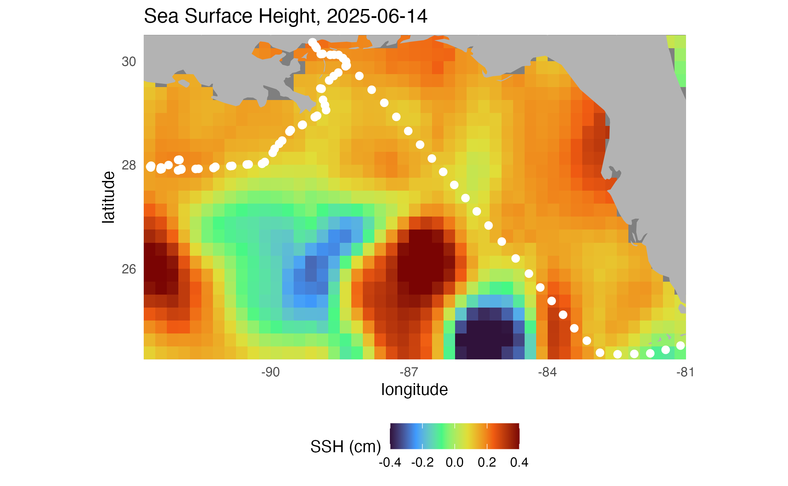
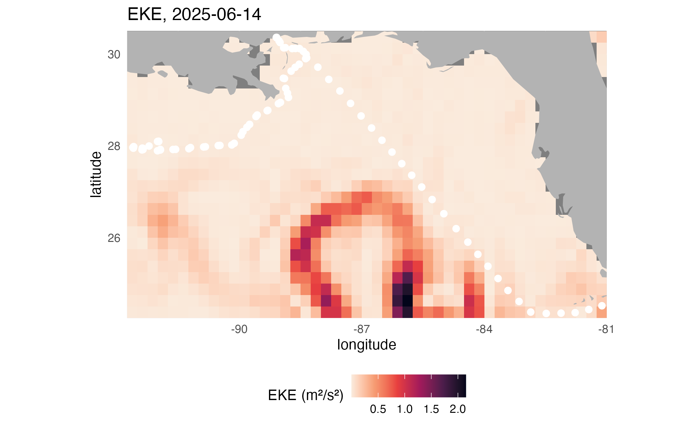
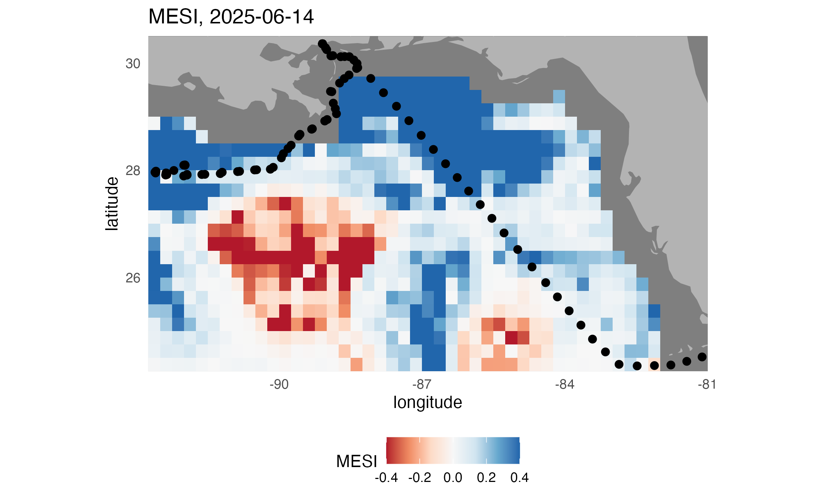
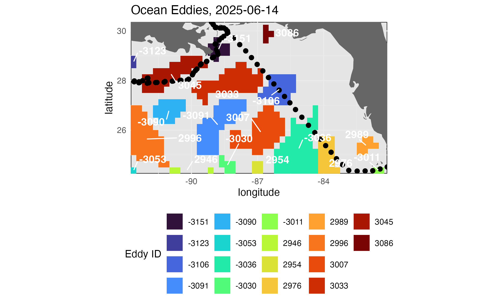
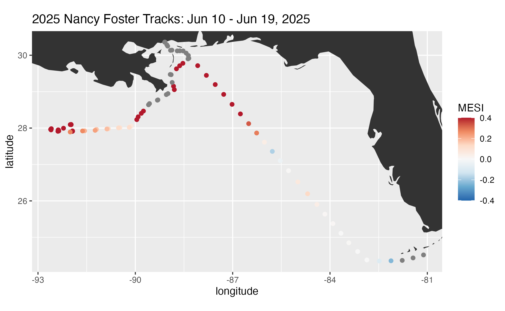
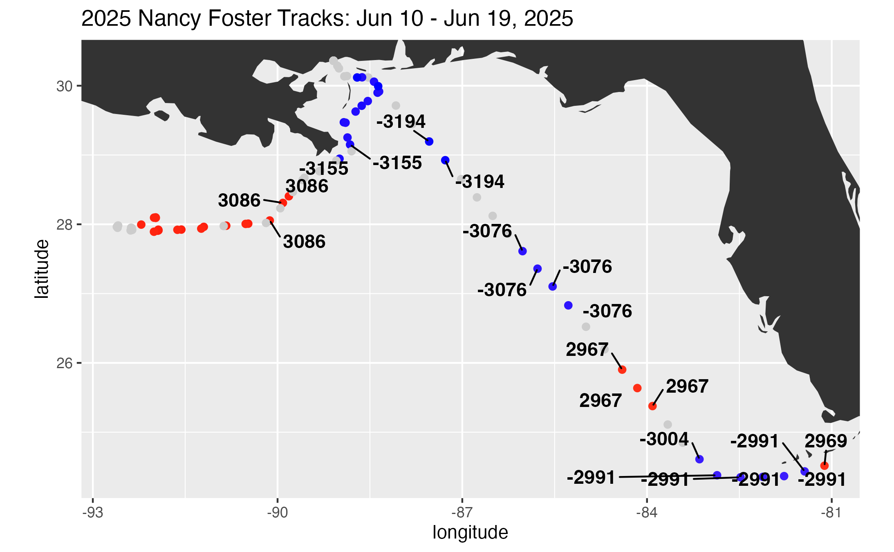
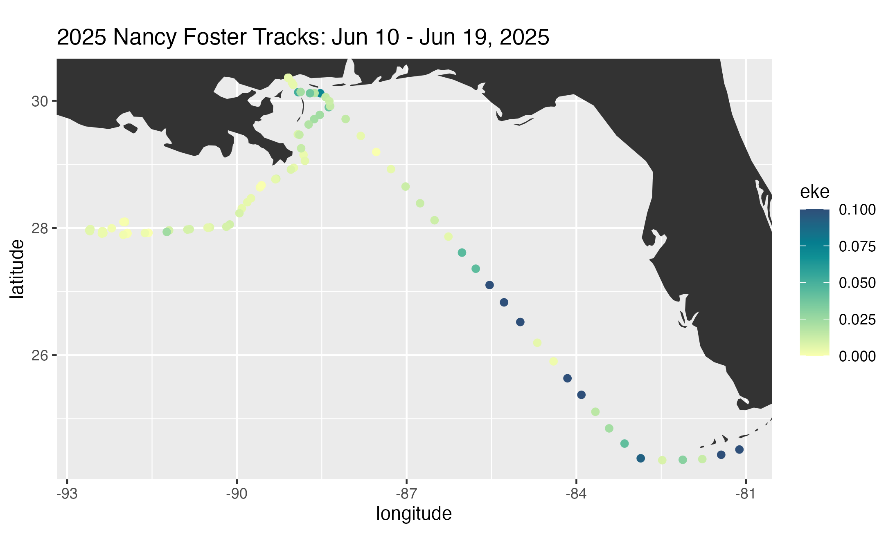

Exploring the MESI & MUNSTER eddy datasets
Author: Cara Wilson History | Updated 2026-3-24
This code explores the eddy field around a cruise track using a number of different datasets: Sea level anomalies from satellite altimetery and the MESI and MUNSTER dataset. Underway ship data from NOAA ship the Nancy Foster that was in the Gulf in June 2025. First 4 different maps are made of the region the ship went though, plotting SSH (sea surface height anomaly), EKE (eddy kinetic energy), MESI (multiparameter eddy strength index) and the positions of cyclonic and anticyclonic eddies. Then maps are made showing the values of EKE, MESI and the eddy ID numbers synoptic with the cruise track.
knitr::opts_chunk$set(echo = TRUE)Load Packages
packages <- c(
"ncdf4", "plyr", "lubridate", "rerddap", "ggplot2", "plotdap",
"tidyverse", "scales", "rerddapXtracto", "maps", "mapdata",
"grid", "gridExtra", "reshape2", "viridis", "plotly",
"ggrepel", "patchwork", "magrittr"
)
to_install <- setdiff(packages, rownames(installed.packages()))
if (length(to_install) > 0) {
install.packages(to_install)
}
purrr::walk(packages, library, character.only = TRUE)Get the ship underway data for Nancy Foster in the Gulf in June 2025
# Download ship data
dataset <- "fsuNoaaShipWTER"
ship <- tabledap(
dataset,
url = "https://coastwatch.pfeg.noaa.gov/erddap/",
fields = c("longitude", "latitude", "time", "salinity", "seaTemperature"),
"time>=2025-06-10",
"time<=2025-06-19"
)
# Convert longitude to 180 format for plotting and rename variables
ship <- ship %>%
dplyr::mutate(
longitude = longitude - 360
) %>%
dplyr::rename(
Ship_SST = seaTemperature,
Salinity = salinity
)Subset track every 2 hours
Initially tried averaging into a daily product, but that produced points that were not actually along the survey track, and didn’t have enough track coverage, so instead subsetting every 2 hours.
ship_2 <- ship %>%
dplyr::slice(seq(1, dplyr::n(), by = 120))Get boundaries of trackline
# Define ranges and midpoint time
trange <- range(ship$time)
midt <- ship %>%
dplyr::summarise(midt = as.character(as.Date(median(time)))) %>%
dplyr::pull(midt)
xrange <- range(ship$longitude)
yrange <- range(ship$latitude)Get fields of EKE, SLA and eddy labels
# The MESI data set contains SSH, EKE and the MESI data, while the MUNSTER dataset provides the
# unique identification of specific eddies.
# Here the data is being extracted for only one day, for the entire region transversed by the ship.
mesi_info <- rerddap::info(
"noaacweddymesiplusdaily",
url = "https://coastwatch.noaa.gov/erddap"
)
munster_info <- rerddap::info(
"noaacweddymunsterdaily",
url = "https://coastwatch.noaa.gov/erddap"
)
# Download gridded data
mesi_2d <- griddap(
mesi_info,
latitude = yrange,
longitude = xrange,
time = c(midt, midt),
fields = c("mesi", "ssh", "eke")
)
eddy_2d <- griddap(
munster_info,
latitude = yrange,
longitude = xrange,
time = c(midt, midt),
fields = c("Label_cyclo", "Label_anti")
)
# Multiple the eddy IDby -1 for cyclonic eddies to be able to distinguish them from anticyclonic eddies
eddy_2d$data <- eddy_2d$data %>%
dplyr::mutate(
Label_cyclo = Label_cyclo * -1
)
# Put the data in a form for mapping with ggplot
mesi_df <- mesi_2d$data %>%
tibble::as_tibble() %>%
tidyr::pivot_longer(
cols = -c(longitude, latitude, time),
names_to = "variable",
values_to = "value"
)
eddy_df <- eddy_2d$data %>%
tibble::as_tibble() %>%
tidyr::pivot_longer(
cols = -c(longitude, latitude, time),
names_to = "variable",
values_to = "value"
) #info() output passed to x; setting base url to: https://coastwatch.noaa.gov/erddap
#info() output passed to x; setting base url to: https://coastwatch.noaa.gov/erddapMake map of SSH
# Plot sea surface height
map_data_subset <- mesi_df %>%
dplyr::filter(variable == "ssh")
map1 <- ggplot2::ggplot() +
ggplot2::geom_tile(
data = map_data_subset,
ggplot2::aes(x = longitude, y = latitude, fill = value)
) +
annotation_map(
ggplot2::map_data("world"),
fill = "gray70",
color = NA
) +
ggplot2::geom_point(
data = ship_2,
ggplot2::aes(x = longitude, y = latitude),
color = "white",
size = 2
) +
ggplot2::scale_fill_viridis_c(
option = "turbo",
name = "SSH (cm)",
limits = c(-0.4, 0.4),
oob = scales::squish
) +
ggplot2::coord_quickmap(expand = FALSE) +
ggplot2::theme_minimal() +
ggplot2::theme(
panel.background = ggplot2::element_rect(fill = "black"),
legend.position = "bottom"
) +
ggplot2::labs(
title = paste("Sea Surface Height,", midt)
)
print(map1)
ggplot2::ggsave("SSHmap.png", plot = map1)
Make map of EKE
# Plot eddy kinetic energy (EKE)
map_data_subset <- mesi_df %>%
dplyr::filter(variable == "eke")
map2 <- ggplot2::ggplot() +
ggplot2::geom_tile(
data = map_data_subset,
ggplot2::aes(x = longitude, y = latitude, fill = value)
) +
annotation_map(
ggplot2::map_data("world"),
fill = "gray70",
color = NA
) +
ggplot2::geom_point(
data = ship_2,
ggplot2::aes(x = longitude, y = latitude),
color = "white",
size = 2
) +
ggplot2::scale_fill_viridis_c(
option = "rocket",
name = "EKE (m²/s²)",
direction = -1,
oob = scales::squish
) +
ggplot2::coord_quickmap(expand = FALSE) +
ggplot2::theme_minimal() +
ggplot2::theme(
panel.background = ggplot2::element_rect(fill = "black"),
legend.position = "bottom"
) +
ggplot2::labs(
title = paste("EKE,", midt)
)
print(map2)
ggplot2::ggsave("EKEmap.png", plot = map2)
Make map of MESI
# Plot MESI
map_data_subset <- mesi_df %>%
dplyr::filter(variable == "mesi")
map3 <- ggplot2::ggplot() +
ggplot2::geom_tile(
data = map_data_subset,
ggplot2::aes(x = longitude, y = latitude, fill = value)
) +
annotation_map(
ggplot2::map_data("world"),
fill = "gray70",
color = NA
) +
ggplot2::geom_point(
data = ship_2,
ggplot2::aes(x = longitude, y = latitude),
color = "black",
size = 2
) +
ggplot2::scale_fill_distiller(
palette = "RdBu",
name = "MESI",
limits = c(-0.4, 0.4),
direction = 1,
oob = scales::squish
) +
ggplot2::coord_quickmap(expand = FALSE) +
ggplot2::theme_minimal() +
ggplot2::theme(
panel.background = ggplot2::element_rect(fill = "black"),
legend.position = "bottom"
) +
ggplot2::labs(
title = paste("MESI,", midt)
)
print(map3)
ggplot2::ggsave("MESImap.png", plot = map3)
Make map of eddy location
# Identify eddy centers
eddy_centers <- eddy_df %>%
dplyr::filter(abs(value) > 0) %>%
dplyr::group_by(value) %>%
# Find the center of each eddy for labeling
dplyr::summarise(
longitude = mean(longitude),
latitude = mean(latitude),
.groups = "drop"
)
# Plot eddy IDs
map4 <- ggplot2::ggplot() +
ggplot2::geom_tile(
data = eddy_df %>% dplyr::filter(abs(value) > 0),
ggplot2::aes(x = longitude, y = latitude, fill = as.factor(value))
) +
annotation_map(
ggplot2::map_data("world"),
fill = "gray40",
color = NA
) +
ggplot2::geom_point(
data = ship_2,
ggplot2::aes(x = longitude, y = latitude),
color = "black",
size = 2
) +
ggrepel::geom_text_repel(
data = eddy_centers,
ggplot2::aes(x = longitude, y = latitude, label = value),
color = "white",
fontface = "bold",
size = 4,
box.padding = 0.5
) +
ggplot2::scale_fill_viridis_d(
option = "turbo",
name = "Eddy ID"
) +
ggplot2::coord_quickmap(expand = FALSE) +
ggplot2::theme_minimal() +
ggplot2::theme(
panel.background = ggplot2::element_rect(fill = "gray90"),
legend.position = "bottom"
) +
ggplot2::labs(
title = paste("Ocean Eddies,", midt)
)
print(map4)
ggplot2::ggsave("Eddymap.png", plot = map4)
The maps above show a snapshot of conditions in the middle of the cruise track. To see a more synoptic view of of conditions along the track we will extract the match-up data for the positions along the cruise track.
Get MESI values
# Extract MESI values along the ship track
track1 <- rxtracto(
mesi_info,
parameter = "mesi",
xcoord = ship_2$longitude,
ycoord = ship_2$latitude,
tcoord = as.Date(ship_2$time),
xlen = 0.2,
ylen = 0.2
)
ship_2 <- ship_2 %>%
dplyr::mutate(
mesi = track1$`mean mesi`
)Set up cruise info (for plot titles)
# Create plot title
time_summary <- ship %>%
dplyr::summarise(
begtime = format(min(time), "%b %d"),
endtime = format(max(time), "%b %d, %Y")
)
ptitle <- time_summary %>%
dplyr::transmute(
title = paste0("2025 Nancy Foster Tracks: ", begtime, " - ", endtime)
) %>%
dplyr::pull(title)Map tracks with MESI data
# Plot subset ship track colored by MESI
track1 <- ggplot2::ggplot(
ship_2,
ggplot2::aes(x = longitude, y = latitude)
) +
annotation_map(
ggplot2::map_data("world")
) +
ggplot2::geom_point(
ggplot2::aes(color = mesi),
shape = 16,
size = 2
) +
ggplot2::scale_color_distiller(
palette = "RdBu",
name = "MESI",
limits = c(-0.4, 0.4),
oob = scales::squish
) +
ggplot2::coord_quickmap() +
ggplot2::labs(
title = ptitle
)
print(track1)
ggplot2::ggsave("mesi_track.png", plot = track1)
Get eddy label (anti) values
Extract anticyclonic eddy IDs along the ship track. xlen and ylen are kept very small so that a single grid value is returned. Otherwise, averaging would not preserve the actual eddy ID.
track2 <- rxtracto(
munster_info,
parameter = "Label_anti",
xcoord = ship_2$longitude,
ycoord = ship_2$latitude,
tcoord = ship_2$time,
xlen = 0.001,
ylen = 0.001
)
ship_2 <- ship_2 %>%
dplyr::mutate(
Label_anti = track2$`mean Label_anti`
)Get eddy label (cyclo) values
# Extract cyclonic eddy IDs along ship track
track3 <- rxtracto(
munster_info,
parameter = "Label_cyclo",
xcoord = ship_2$longitude,
ycoord = ship_2$latitude,
tcoord = ship_2$time,
xlen = 0.001,
ylen = 0.001
)
# Combine cyclonic and anticyclonic eddy IDs
ship_2 <- ship_2 %>%
dplyr::mutate(
Label_cyclo = -1 * track3$`mean Label_cyclo`,
Label = Label_cyclo + Label_anti
)Map tracks with eddy locations
# Subset eddy observations
eddies <- ship_2 %>%
dplyr::filter(abs(Label) > 0)
# Plot ship track with eddy labels
track2 <- ggplot2::ggplot(
ship_2,
ggplot2::aes(x = longitude, y = latitude)
) +
annotation_map(
ggplot2::map_data("world")
) +
ggplot2::geom_point(
ggplot2::aes(color = Label),
shape = 16,
size = 2
) +
ggplot2::scale_color_gradient2(
low = "blue",
mid = "gray80", # zero values shown in gray
high = "red",
midpoint = 0,
oob = scales::squish
) +
ggrepel::geom_text_repel(
data = eddies,
ggplot2::aes(x = longitude, y = latitude, label = Label),
color = "black",
fontface = "bold",
size = 4,
box.padding = 0.5
) +
ggplot2::coord_quickmap() +
ggplot2::labs(
title = ptitle,
color = "Eddy"
) +
ggplot2::theme(
legend.position = "none"
)
print(track2)
ggplot2::ggsave("eddy_track.png", plot = track2)
Get EKE values
# Extract EKE values along the ship track
track4 <- rxtracto(
mesi_info,
parameter = "eke",
xcoord = ship_2$longitude,
ycoord = ship_2$latitude,
tcoord = ship_2$time
)
ship_2 <- ship_2 %>%
dplyr::mutate(
eke = track4$`mean eke`
)Map tracks with EKE data
# Plot subset ship track colored by EKE
pal <- rev(hcl.colors(10, palette = "BluYl"))
g <- ggplot2::ggplot(
ship_2,
ggplot2::aes(x = longitude, y = latitude)
) +
annotation_map(
ggplot2::map_data("world")
) +
ggplot2::geom_point(
ggplot2::aes(color = eke),
shape = 16,
size = 2
) +
ggplot2::scale_color_gradientn(
colors = pal,
limits = c(0, 0.1),
oob = scales::squish
) +
ggplot2::coord_quickmap() +
ggplot2::labs(
title = ptitle
)
print(g)
ggplot2::ggsave("eke_map.png")